Strona jest spisem rytuałów uzbieranych wśród społeczności gry wydanej przez miHoYo Co. Ltd. Jak powszechnie wiadomo, wszelkie fanty w grze zsyła z nieba bóg gachy (w mitologii syn bóstwa RNG), co stanowi wyraz łaski udzielanej istotom ziemskim. Każdy z nas podlega jego woli, niezależnie od tego czy jest spoconym tierlistowcem, czy też casualowym miłośnikiem rozmaitych waifu. Obfitość darów dla graczy bezpośrednio zależy od jego dobrego humoru – oddając mu należną cześć poprzeez rytuały, ludzie wynagradzani są upragnionymi odłamkami z nieba.
Poniższe informacje dot. przygotowań mają charakter czysto rozrywkowy i nie wpływają na zawartość otrzymywanych nagród w Genshin Impact. Przewodnik stworzony jest dla osób, które lepiej bawią się wtedy, gdy przywiązują do openingów określone ceremonie.
To najbardziej znany rytuał przyzywania pożądanych nagród. Polega na udaniu się na najwyższy szczyt łańcucha górskiego Dragonspine i rozpoczęciu w tamtym miejscu wishowania.
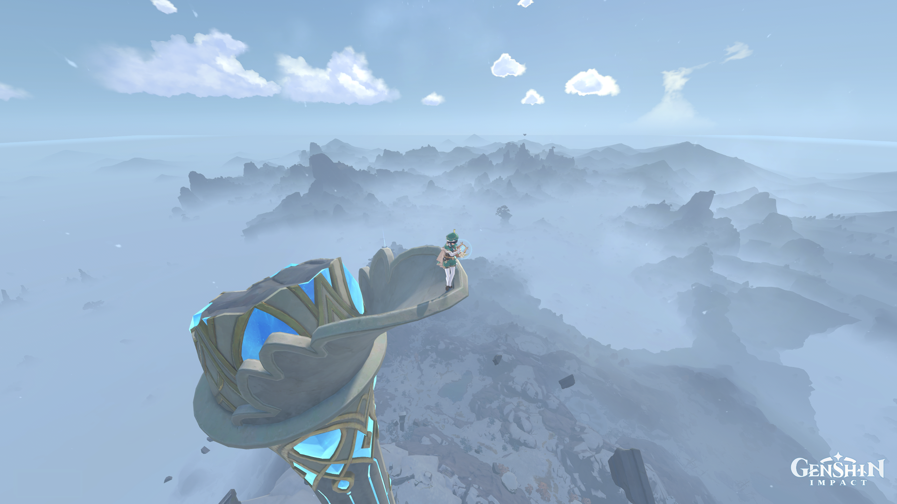
Istnieje wiele alternatywnych celów pielgrzymki:
Święty pomnik w Mondstadt posiada dwie boskie interakcje:
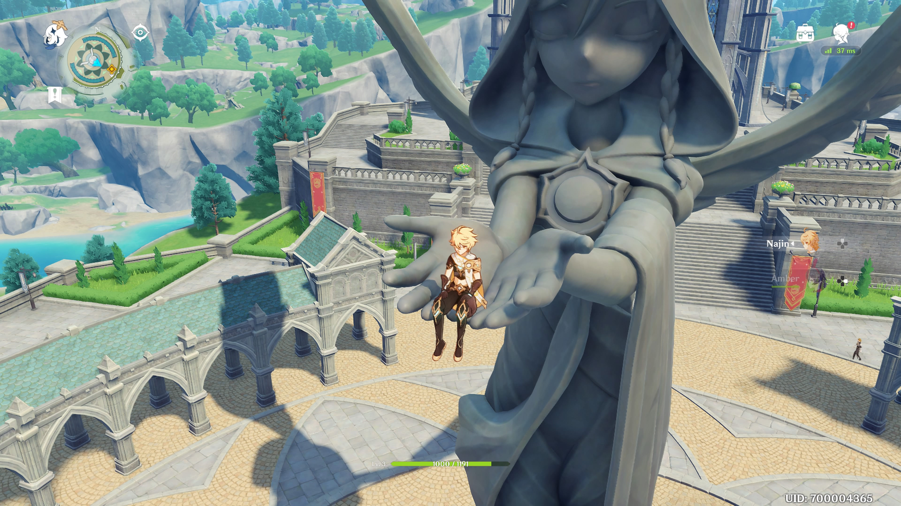
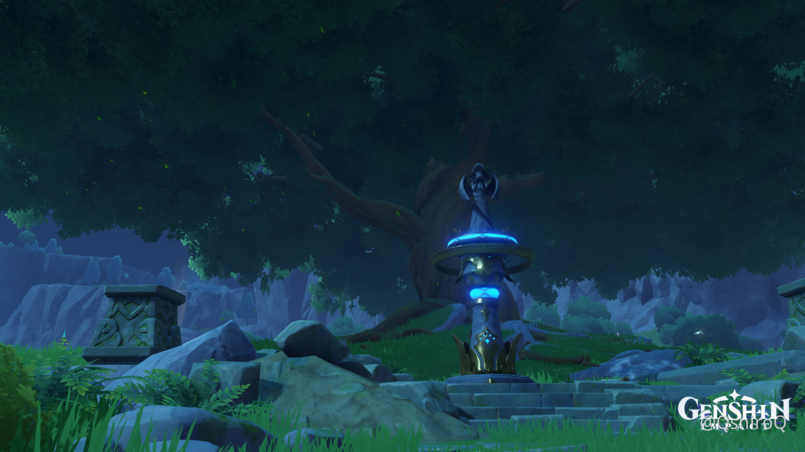
Niektórzy zalecają trzykrotne okrążenie drzewa zgodnie z ruchem wskazówek zegara.
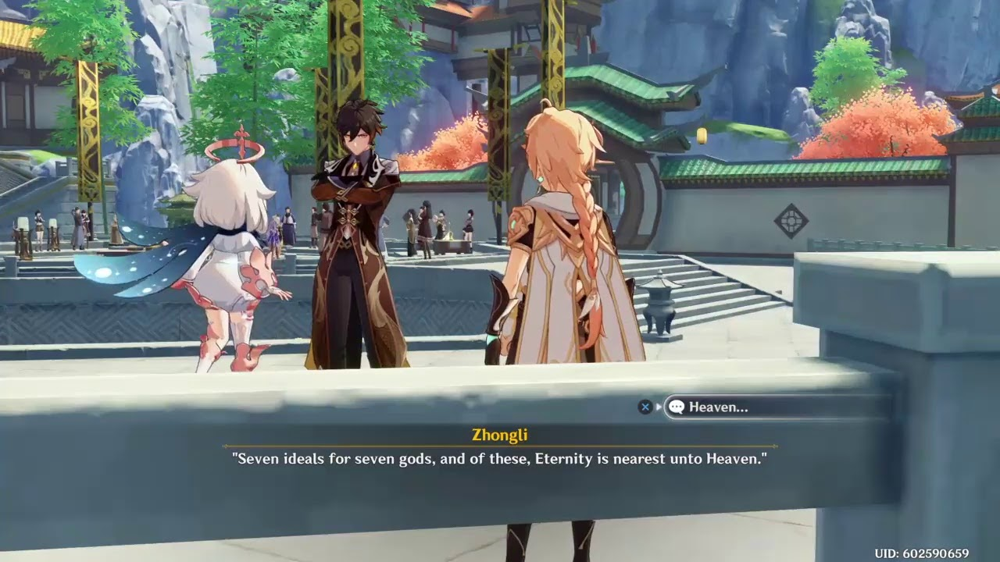
Plac, na którym odbywał się Rite of Parting.
Uważa się, że okrągła bądź specjalna liczba Mory lub primogemów w trakcie wydawania znacząco sprzyja szczęśliwym nagrodom z wishowania. Ważna jest godzina, w której podejmuje się gachę. Gracz może ustawić określoną godzinę w grze za pomocą przycisku Wait w menu Paimona.
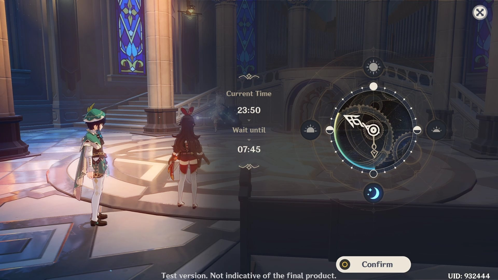
Do najpopularniejszych godzin należą: własna godzina urodzenia, idealna północ albo południe, godzina śmierci Jana Pawła II, godzina odpowiadająca godzinie w świecie rzeczywistym.
Niektóre przekazy głoszą, że gdy dzień w kalendarzu naszego świata zgadza się z dniem urodzin pożądanej postaci, to szanse na jej otrzymanie znacznie się zwiększają.
Niebywale ważną rzeczą jest ułożenie odpowiedniego party do pullowania.
Prosta metoda polegająca na ustawieniu party złożonego z postaci znajdujących się na grafice bannera.
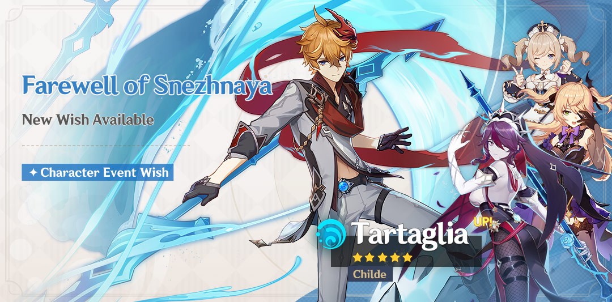
Przykładowa drużyna odpowiadająca temu bannerowi:
Ustawienie party złożonego z samych żywiołów upragnionego bohatera.
W Genshin Impact postacie sklasyfikowane są według podziałów na wiek i płeć, co odzwierciedlone jest w sposobie oraz prędkości poruszania się, który współdzielą. Wyróżniają się następująco: adult male, adult female, teen male, teen female, child male oraz child female. Ustaw w swoim party cztery postacie z tej samej grupy.
Udaj się do dowolnej osady hilichurli w co-opie, ustaw się z przyjaciółmi wokół ogniska i zacznijcie je okrążać jednocześnie skacząc.
Metoda ta wzbudza wiele kontrowersji ze względu na jej nieczysty charakter. Dziś posługują się nią tylko nieliczne sekty w Teyvat. Polega ona na podjęciu kontaktu z rule34 bądź opowiadaniami fanfiction wybranej postaci z Genshin Impact do czasu osiągnięcia satysfakcji. 200 lat temu została uznana przez uczonych za obrazę bogów i wycofana z powszechnej praktyki.
Rozwijaniu konstelacji sprzyja przygotowywanie specjalnych dań upragnionej postaci.
W okolicach Springvale znajduja się sprzedawca wody święconej, Hopkins the Marvelous. Wypij ciecz, aby napełniła cię boską energią potrzebną do szczęśliwego pullowania.
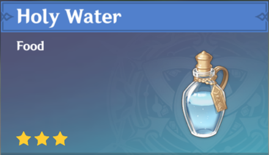
Wezwij pożądanego bohatera poprzez swój biogram. Musisz jednak postarać się o oryginalny opis i zawołać go z głębi serca, wszelkie come home'y i want Tartaglie odpadają z miejsca.
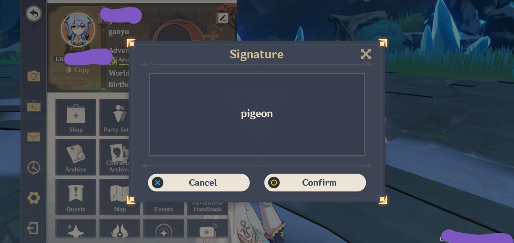
Ta postać znana jest w Genshinie jako pechowiec i przyciąga nieszczęścia do twojej drużyny.
Alchemik na usługach Rycerzy.
Aby pozyskać Albedo, należy stworzyć je w procesie alchemii. Niezbędne do tego celu okażą się receptura na Albedo oraz następujące składniki:
Udaj się do obozu Albedo w Dragonspine
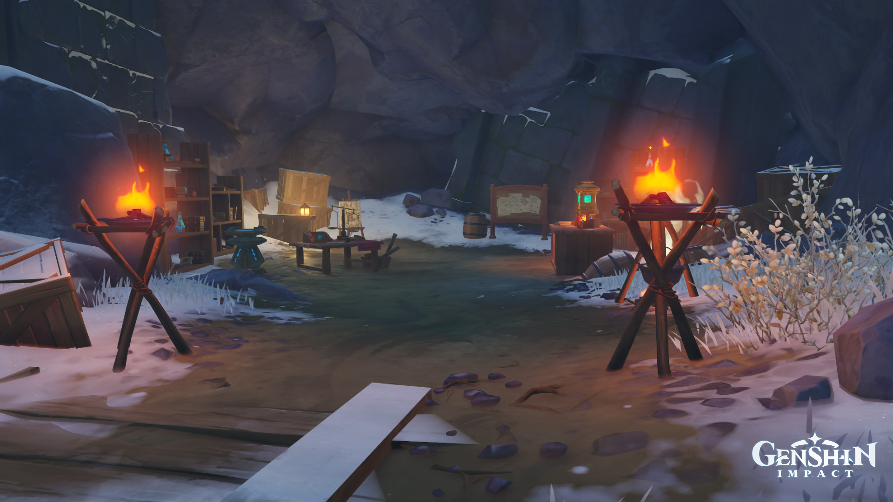
Mistrzyni Lotni w Mondstadt.
Teleportuj się do domaina Peak of Vindagnyr, zapal dwa stojaki na węgiel przy wrotach używając naładowanych ataków Amber. Następnie upuść na ziemię Barona i w trakcie jego tańca wypowiedz: "Już nigdy nie uznam cię za bezużyteczną". Wcielona z powrotem do twojej drużyny Amber zasili twoją konstelację.
Idolka Mondstadt.
Cool Steel to oficjalny lightstick fandomu Barbary. Wyposaż w niego postać posługującą się mieczami i wykonaj pełną sekwencję zwykłych ataków, pomachaj tym jak na koncercie.
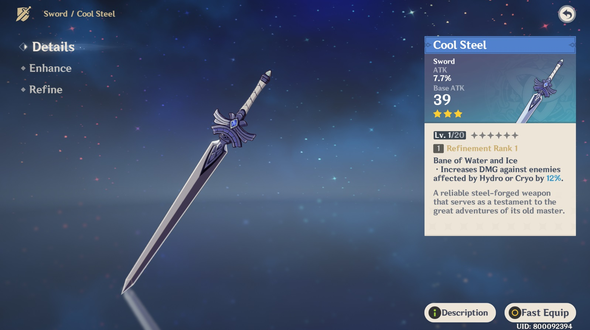
Idź do kuchni i wlej 250 ml wody do szklanki. Dodaj do niej dwie łyżeczki cukru oraz posiekaną paprykę chili, następnie wypij duszkiem podczas animacji wishowania – Barbara jest twoja.
Idź do fontanny w Mondstadt, stań na jej szczycie i użyj Elemental Bursta Barbary.
Gdy Barbara wykonuje podstawowe ataki przed NPC-ami, włącza im się animacja klaskania (zamiast bycia przestraszonymi). Udziel występu 10 mieszkańcom Mondstadt i zbierz od nich aplauz.
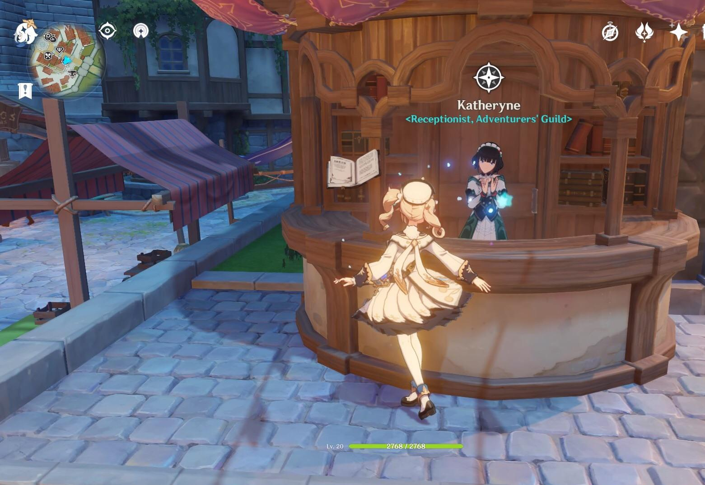
Zeskocz Barbarą z mostu w Mondstadt – musisz zrobić chlup plunging attackiem.
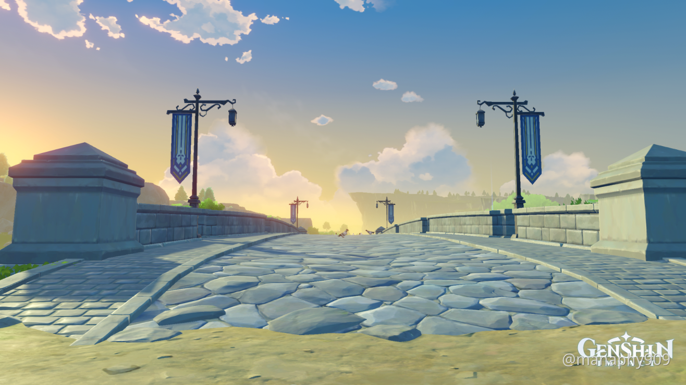
Dowódczyni floty The Crux.
Udaj się na statek Beidou w grze i pomachaj groźnie claymorem, wzywając ją w ten sposób na przygodę. Odtwarzaj w tle szanty.
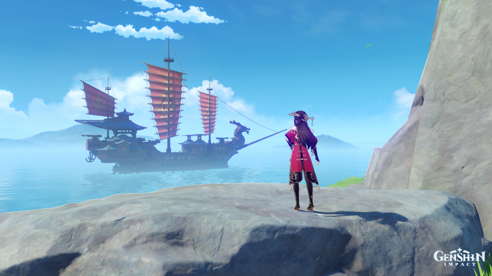
Wishuj w trakcie punktów kulminacyjnych z hangout eventów, które możesz odtworzyć w dowolnej chwili.
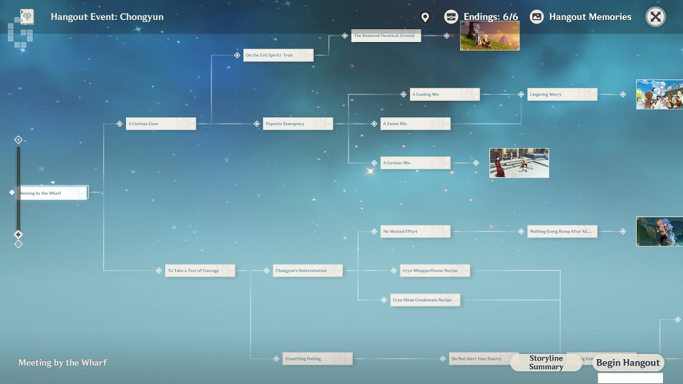
Wpływowy przedsiębiorca z Mondstadt.
Udaj się do Dawn Winery i wypij za zdrowie prezesa.
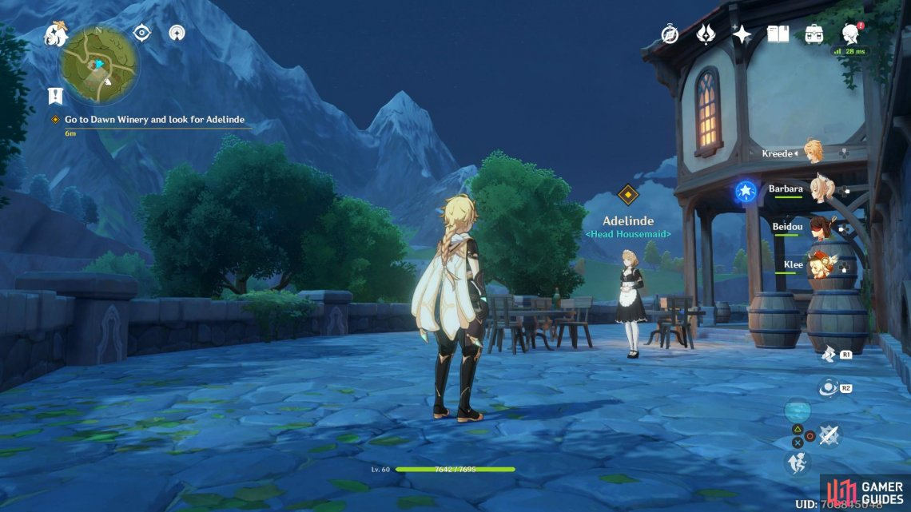
Kelnerka w tawernie Cat's Tail.
Załóż do monitora kocie uszka.
Usiądź na krześle nieopodal wejścia do Cat's Tail.
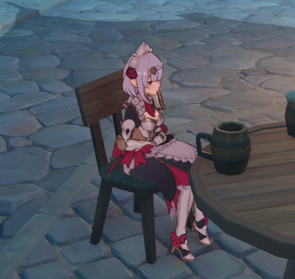
Śledcza Gildii Poszukiwaczy Przygód o królewskim rodowodzie.
Aktywuj postać używającą łuku i zestrzel dowolnego ptaka zdolnego do latania. Rozpocznij pullowanie.
Wypowiedz na głos treść przysięgi z czystym niemieckim akcentem:
|
Ich schwöre Dir, Als Prinzessin und Ermittler der Abenteurer-Gilde Treue und Tapferkeit. |
Sekretarka Liyue Qixing, póładept.
Musisz wjebać całą paczkę
Głowa zakonu rycerskiego w Mondstadt.
Kapitan kawalerzystów Mondstadt o egzotycznym wyglądzie.
Yuheng w Liyue Qixing.
Ostateczna broń Rycerzy.
Wysadź trzy wybuchowe beczki przed pullowaniem.
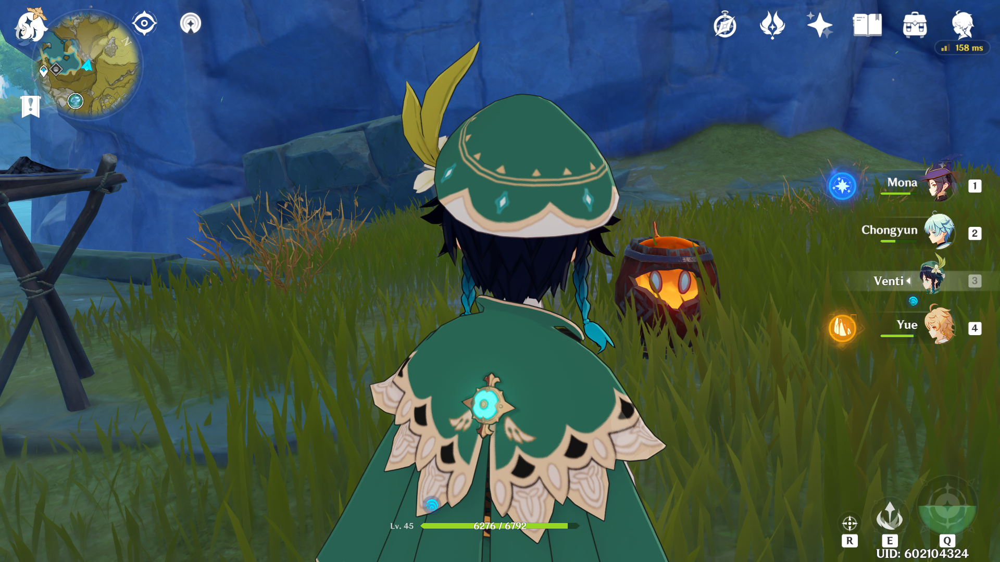
Uczona bibliotekarka zakonu rycerskiego z Mondstadt.
Wejdź do siedziby zakonu rycerskiego w Mondstadt, udaj się do biblioteki, przeczytaj zasady panujące w pomieszczeniu i usiądź na krzesełku bibliotekarki grając Lisą. Następnie rozpocznij wisha.
Patronka Przewodnika.
Pierwszym krokiem jest nauczenie się wszystkich słów kluczowych jakie są charakterystyczne dla poszczególnych działów, a następnie zmieszanie ich w pełną interpretację horoskopu urodzeniowego. Horoskop urodzeniowy, zwany również natalnym to podstawowa forma horoskopu. Jest to horoskop stawiany na dokładną datę i godzinę urodzenia oraz miejsce narodzin. Bardzo istotne jest, aby móc jak najdokładniej określić godzinę urodzenia, ponieważ jej brak może w znacznym stopniu ograniczyć interpretację horoskopu. Szczególnie ma to wpływ na pozycje domów astrologicznych oraz Księżyc. Choć Astrologia to dość skomplikowana nauka, mam nadzieję, że poznanie jej poprzez zestaw najistotniejszych słów kluczowych będzie dla ciebie dużym ułatwieniem.
Aspekt – odległość kątowa pomiędzy dwoma planetami (lub planetą i danym punktem) w kosmogramie. W astrologii istotne znaczenia mają odległości kątowe (ekliptyczne) o wartości: 0° – koniunkcja, 30° – półsekstyl, 60° – sekstyl, 90° – kwadratura, 120 ° – trygon, 150° – kwinkunks i 180° – opozycja; aspekty generalnie dzielimy na harmonijne (60°, 120°) i nieharmonijne (90°, 150°); koniunkcja (0°) oraz opozycja (180°) uważane są za harmonijne lub nie w zależności od natury planet je tworzących; półsekstyl (30°) jest „neutralny”, ma naturę różnicującą.
Biegunowość – podział Zodiaku na fazy pozytywne (męskie, aktywne, jang) – Baran, Bliźnięta, Lew, Waga, Strzelec, Wodnik i negatywne (żeńskie, pasywne, jin) – Byk, Rak, Panna, Skorpion, Koziorożec, Ryby; fazy żywiołu Ognia i Powietrza są aktywne, zaś żywiołu Ziemi i Wody pasywne. Podział Zodiaku ze względu na biegunowość wyraża podstawową naturę podziału świata.
Dominanta – szczególne zaznaczenie danego pasa zodiakalnego przez występujące w nim planety, obsadzenie odpowiadających mu sektorów, szczególne położenie Władcy tej fazy lub ważne aspekty do niego, mające zasadnicze znaczenie przy interpretacji kosmogramu. W każdym kosmogramie jest zazwyczaj kilka dominant, dodatkowo zmiennych w czasie.
Figury planet – specyficzne położenie planet względem siebie w horoskopie. Planety tworzące daną konfigurację wzajemnie modyfikują swoje działanie. Ważniejsze figury planet: Stellium – min. 5 planet (4 jeśli wśród nich Światło) w koniunkcji; Wielki Trygon – min. 3 planety z których każda jest w trygonie z pozostałymi; Mały Trygon – min. 3 planety, z których dwie są w trygonie zaś trzecia tworzy do obu pozostałych sekstyle; Latawiec – min. 4 planety: Wielki Trygon, w którym 2 planety tworzą sekstyl z czwartą; Palec Boży – min. 3 planety, z których jedna tworzy z dwoma pozostałymi kwinkunksy, zaś planety te są ze sobą w sekstylu; Prostokąt Mistyczny – min. 4 planety, połączone dwoma trygonami i dwoma sekstylami; Wielki Krzyż – min. 4 planety połączone czterema kwadraturami i dwoma opozycjami; Półkrzyż – min. 3 planety, jedna opozycja, dwie kwadratury; jedna z planet w figurze może być zastąpiona przez Ascendent lub Medium Coeli jednak taka figura jest zwykle słabsza niż gdyby składała się z samych planet.
Jakości – podział 12 faz Zodiaku na 3 grupy – kardynalne (Baran, Rak, Waga, Koziorożec), stałe (Byk, Lew, Skorpion, Wodnik) i zmienne (Bliźnięta, Panna, Strzelec, Ryby).
Mandale Zodiaku – technika umożliwiająca wyjaśnienie każdego pojęcia oraz procesu, który można zaklasyfikować do jednego z 12 –> Archetypów Zodiaku. Podstawą do interpretacji Mandali Zodiaku jest koło Zodiaku z danym archetypem (Fazą Zodiaku) jako fazą Ascendentu oraz kolejnymi fazami przyporządkowanymi do kolejnych sektorów. Dzięki temu uzyskujemy dwa nakładające się na siebie, dwunastoelementowe, systemy odniesienia – zodiakalny i sektorowy. Najbardziej znaną Mandalą Zodiaku jest Mandala Władzy (Koziorożca) szczegółowo opisana przez prof. Leszka Weresa w miesięczniku „Nieznany Świat” (nr 4/97 – 9/97). Zobacz też: Zodiak Dynamiczny.
Układ planet – specyficzny rozkład planet w kosmogramie. Ważniejsze układy planet: Rozprysk – równomierne rozłożenie planet w kosmogramie; Zwichnięcie – planety rozłożone równomiernie, a w jednym miejscu skupisko min. 4 planet (3 jeśli wśród nich Światło); Lokomotywa – wszystkie planety znajdują się w obrębie 240 stopni; Miska – wszystkie planety zgrupowane w obrębie 180 stopni; Pęk (wiązka) – wszystkie planety zgrupowane w obrębie 120 stopni; Parasol – Miska z min. 1 planetą w opozycji do midpunktu skrajnych planet; Huśtawka – planety tworzą dwie grupy oddalone od siebie o min. 60 stopni, występuje między nimi opozycja; Trójnóg – planety w trzech grupach oddalonych od siebie o min. 60 stopni, w najczystszej postaci grupy te tworzą razem figurę planet – Wielki Trygon.
Zodiak – pas nieba po obu stronach ekliptyki; niekiedy uważa się, że Zodiak obejmuje całą sferę niebieską; Zodiak dzieli się na 12 równych części zwanych fazami (znakami) Zodiaku. W astrologii znaczenie ma tzw. Zodiak zwrotnikowy (tropikalny), rozpoczynający się od punktu równonocy wiosennej (0° Barana); jego fazy nie pokrywają się z gwiazdozbiorami o tych samych nazwach (w przeciwieństwie do niewykorzystywanego w astrologii Zodiaku syderycznego (gwiazdowego), na którym bazuje astronomia).
Żywioły – cztery podstawowe budulce wszechświata: Ogień, Ziemia, Powietrze, Woda; w astrologii symbolicznie przyjmuje się, że człowiek jako część wszechświata ma w sobie wszystkie cztery żywioły, które przejawiają się z różną siłą i na różne sposoby w jego istnieniu (zarówno w aspekcie fizycznym jak i psychicznym); 12 faz Zodiaku dzieli się na 4 grupy żywiołów: Ogień (Baran, Lew, Strzelec), Ziemia (Byk, Panna, Koziorożec), Powietrze (Bliźnięta, Waga, Wodnik) i Woda (Rak, Skorpion Ryby).
Ewentualnie sprawdź po prostu w gazecie swój horoskop na dziś, jak gwiazdy są ułożone niepomyślnie to nawet nie myśl o otrzymaniu Mony.
Głowa Liyue Qixing.
Rycerska pokojówka z Mondstadt.
Noelle nie toleruje bałaganu. Posprzątaj swój pokój przed pullowaniem.
Aptekarka w Bubu Pharmacy.
Postaw przed monitorem szlankę mleka kokosowego.
Chłopiec wychowany przez wilki.
Należy rozpocząć Wolf of the North Challenge i w jego trakcie postarać się o Razora za pomocą F3.
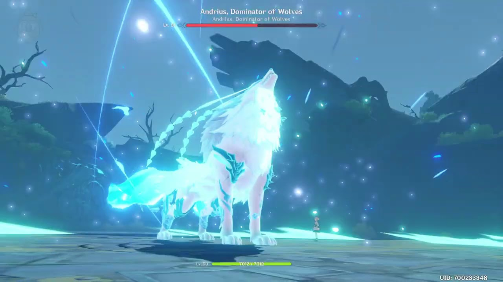
Zbierz wszystkie wilcze jagody z Wolvendom, aby zwabić Razora na swój szlak.
Organiczny związek chemiczny, węglowodan z grupy disacharydów zbudowany z reszt D-fruktozy i D-glukozy. Ma słodki smak.
Jedenasty z Heroldów Fatui.
Należy przed wishowaniem zneutralizować jednego Ruin Guarda w celu podarowania go młodszemu bratu Childe'a, Teucerowi.
Aby zwiększyć szanse otrzymania Childe'a, należy wejść w menu wishowania (F3) w trakcie podejmowania z nim walki w mennicy.
Były Archon Mondstadt, wędrujący bard.
Idź do tawerny w Mondstadt, usiądź na krzesełku, wybierz w dialogu pogawędkę z barmanem, a następnie własnymi ustami nonszalancko wypowiedz na głos:
– To, co zwykle
Rozpocznij ponownie dialog z barmanem, tym razem zamów Apple Cider przez menu sklepowe (ważne! to jedyny napój alkoholowy do kupienia w grze, a także ulubiony trunek Ventiego). Wypij poprzez ekwipunek i rozpocznij pullowanie.
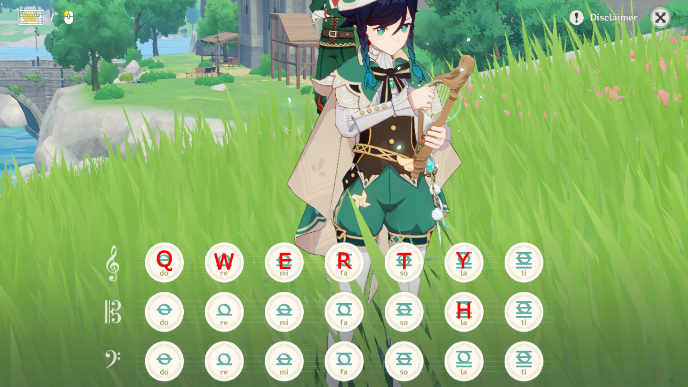
Wiatr głosi, że bard będzie podążać śladami kojących pieśni, zaciekawiony wyzwaniem, które rzucił mu inny grajek. Można tego dokonać w grze wyłącznie za pomocą eventowego gadżetu Windsong Lyre. Poniżej lista utworów wartych zagrania:
Udaj się do miejsca, gdzie po raz pierwszy spotkałeś Ventiego (wtedy gdy starał się uspokoić Dvalina).
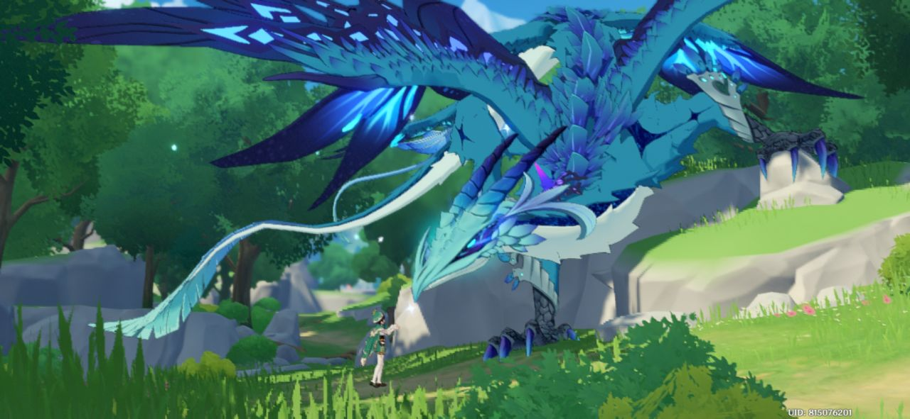
Szefowa kuchni w restauracji Wanmin.
Zamów, usiądź przy stole i skonsumuj w menu ekwipunku jeden z pikantnych posiłków w Wanmin Restaurant w Liyue. Następnie rozpocznij pullowanie.
Jeden z pięciu jaksz.
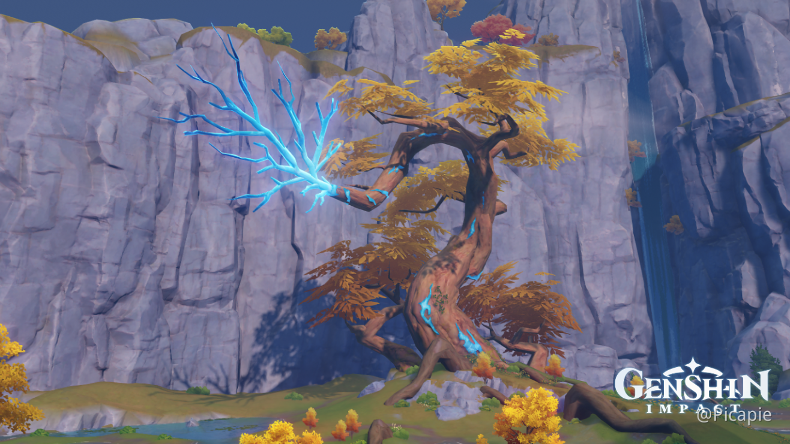
Udaj się do miejsca, w którym pojawił się Xiao w story queście Ganyu.
Ugotuj:
Syn prezesa gildii kupieckiej Feiyun, krzewiciel sztuk klanu Guhua.
Wejdź do Archiwum, odczytaj wszystkie tomy dowolnej książki z działu literatury wysokiej Liyue, a następnie rozpocznij zabieganie o Xingqiu.
Zaszczytu otrzymania Xingqiu dostąpią wyłącznie jednostki szlachetne. Ludzi cechujących skłonność do występku, bierne poczucie sprawiedliwości czy brak poszanowania dla klanowych tradycji czekają gorycz i rozczarowanie, albowiem panicz nie życzy sobie przebywania w otoczeniu szubrawców.
Kto tym gra XD
Były Archon Liyue, konsultant Zakładu Pogrzebowego Wangsheng.
Aby otrzymać Zhongliego, należy podpisać z nim umowę do pobrania tutaj, wydrukować, a następnie podjąć się wishowania na jego bannerze.
Udaj się na najwyższy punkt Guyun Stone Forest, formacji skalnej powstałej w wyniku pradawnych wojen. Przypomnisz Zhongliemu jego dni chwały.
Chcesz dodać rytuał? Napisz do mnie